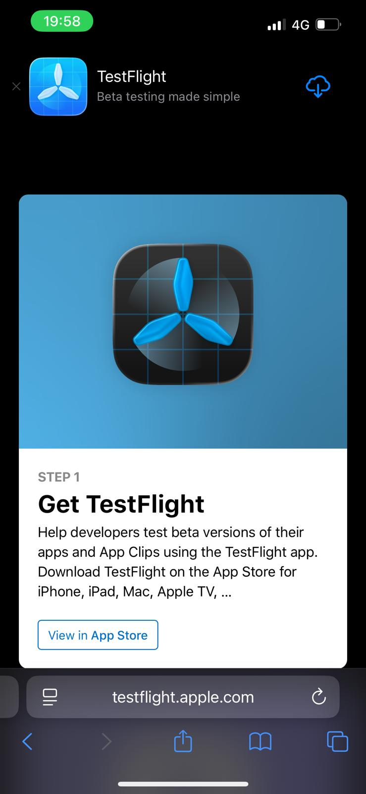

Pasul 1
Descarcă TestFlight
Deschide linkul de invitație Qelvi. Pagina TestFlight îți arată aplicația necesară pentru instalarea versiunii beta.
Acțiune: apasă View in App Store și
instalează aplicația TestFlight.
